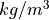

3.0 Layer attributes¶
3.1 Density¶
Gravity modelling is achieved using bulk density contrasts relative to a reference density.
Each layer requires:
- An absolute bulk density
- A reference density
All densities must be input using units .
These are input using the attribute side bar or within the Attribute table.
This enables gravity anomalies relative to say an upper crust of 2670 , lower crust 2900 and upper mantle of 3330 .
For each layer both the bulk absolute density and the reference density must be set. For example:
To model a sedimentary unit it may have a density set as 2300 and reference crustal density of 2670 .
To model crustal thickened from a reference crustal thickness of 32 km to 36 km, a lower crustal density of 2800 maybe be modelled against a upper most mantle reference density of 3330 .
Tip
To set all layer reference densities as a single value (e.g. when only modelling upper crustal structure)
use the gravity Field -> Set background density tool.
3.2 Magnetic Susceptibility¶
Susceptibility must be input using SI units.
A ‘strike’ must also be assigned for each unit.
Important
Strike is the angle (in degrees) that the strike of the unit in map view makes with respect to magnetic north (the angle is positive when measured counterclockwise) See Won and Bevis (1987) for a diagram and further details. The strike of the unit is assumed to be orthogonal to the model transect (striking into and out of the screen).
For example:
If the model is orientated West-East and magnetic north is -22 deg the strike of the unit is -22 deg.
If the model was orientated North-South the angle would be 68 deg.